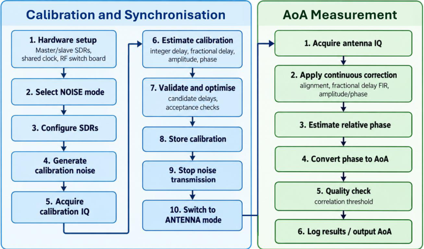
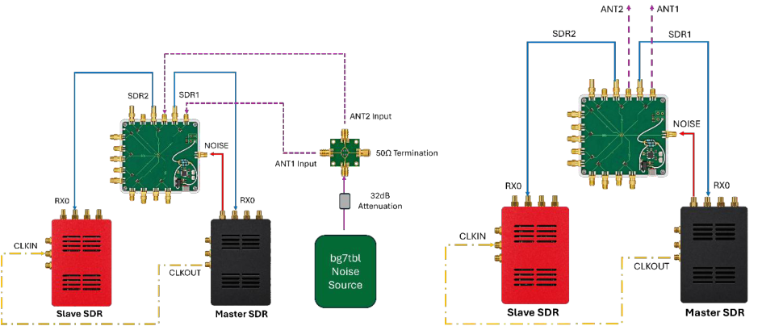
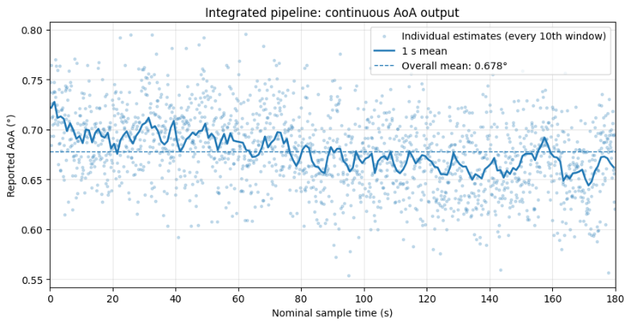

UC Rocketry Independent Study
This independent study for UC Rocketry investigated using two bladeRF software-defined radios to estimate the direction of an incoming RF signal from its relative phase. The main challenge was synchronising and calibrating the receivers so that differences in timing, amplitude and phase introduced by the hardware could be compensated before estimating angle of arrival (AoA).
I developed a Python processing system covering receiver setup, automatic calibration, continuous signal correction and AoA estimation, and evaluated it through simulation and controlled hardware experiments.
The system first uses a common noise signal to estimate and validate the relative receiver offsets. It then switches to the measurement paths and applies the saved calibration to continuously acquired samples. A fractional-delay FIR filter and complex gain correction maintain signal alignment, allowing relative phase and AoA to be calculated for each measurement window.


Continuous calibration experiments achieved mean corrected correlations above 0.99. In the final integrated test, the system processed 18,000 consecutive measurement windows over 180 seconds, with a mean corrected correlation of 0.9740 and an apparent AoA standard deviation of 0.0381°.
Simulation validated the AoA estimator, achieving 0.070° angular RMSE at a 30° arrival angle, 10 dB SNR and 10,000 samples. Hardware investigations identified a 15.084° spread in residual phase offsets across ten independent starts when transferring calibration between RF paths. Further experiments narrowed down the behaviour, but the underlying cause remained unresolved.

The complete pipeline was demonstrated using a common conducted RF signal. Absolute AoA accuracy with spatially separated antennas remains unvalidated. The next steps are to resolve the startup-dependent phase offset and test against known physical arrival angles.
The final report and presentation describe the implementation, experiments and remaining limitations.